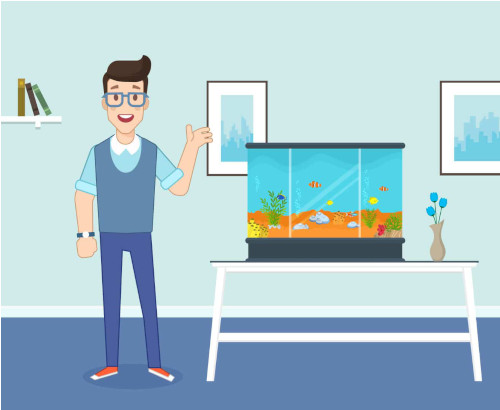
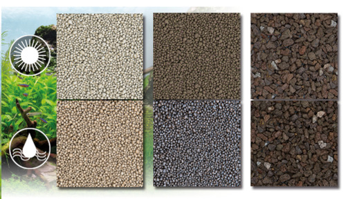
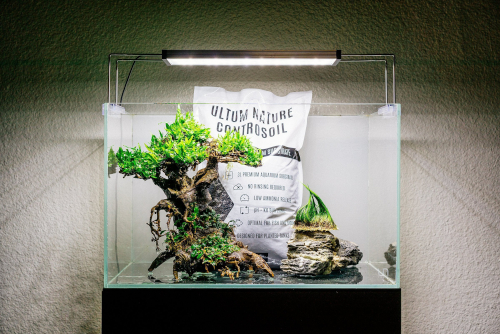
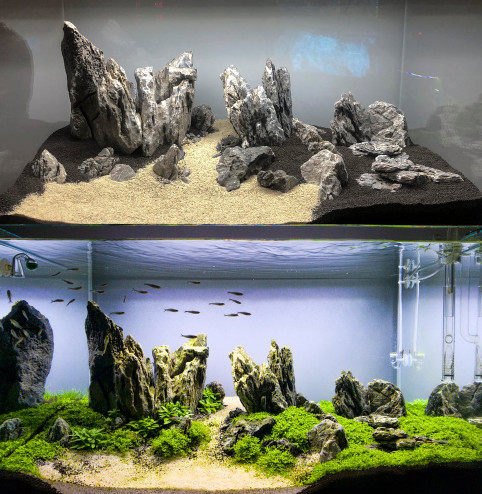

A little forethought goes a long way when it comes to preparing a home aquarium. Preparation is important so that you don't cause excess stress on your fish or introduce diseases, chemicals, and other harmful toxins into your new aquarium. All of which could negatively impact your new fishes' health. Follow this guide and you will know how to prepare an aquarium for your new friends.
PREPARE THE AQUARIUM LOCATION AND DESIGN
The first thing you need to do with preparing a home aquarium is to give some careful consideration to where you want to put the tank. You will want to choose a location that can support the weight of the tank, has electrical power nearby, and doesn't experience extreme temperature swings (this guide covers choosing a location in more detail). If you make a poor choice and need to move the tank later, you will have to empty the tank before it can be moved elsewhere. This is obviously very stressful on your fish and a huge pain to do.
It is also a good idea to plan the layout of the tank well in advance. This will help you prepare an aquarium that not only looks attractive but also allows the fish to display their natural behavior.
HOW TO PREPARE SOIL, SAND, AND GRAVEL FOR AN AQUARIUM
One of the most important elements to any aquarium is the substrate. The substrate is the material covering the floor of the tank. This not only forms an essential part of the habitat for the fish, but also provides anchorage for the roots of any aquarium plants and a surface on which beneficial bacteria can develop.
For fish that require a sandy substrate, use filtration sand or river sand, which are chemically inert (it does not affect the water) and non-compacting. To prepare sand for an aquarium it needs to be rinsed and cleaned to prevent making the water cloudy with dust. This can be done by moving the sand back and forth between two buckets while pouring off any dirty water.
Most freshwater aquariums use gravel as the substrate, since the water passes through it more easily than sand, which makes the under-gravel filter more effective. Aquarium gravel is available in various grain sizes, but make sure that the gravel you choose is appropriate for the fish you intend to keep. The large stones of coarse-grained gravel, for example, will not be suitable for fish that habitually dig in the substrate, bury themselves in it, or sift the stones in search of food.
When buying gravel, bear in mind that a layer of about 2 in (5 cm) is needed to create the filter bed. This means you need roughly 2 lb (1 kg) of gravel for every gallon (4 liters) of tank capacity. Although aquarium gravel is usually pre-washed, this does not mean that it is necessarily clean enough for the tank. Rinse it thoroughly to remove all traces of sediment. Otherwise, you may find that a muddy scum forms on the water when you fill the aquarium.
It is also advisable to soak the gravel overnight in aquarium disinfectant to reduce the likelihood of introducing disease or parasites into the tank.
If you intend to keep fish that require soft-water conditions, avoid gravel containing limestone (calcium carbonate) as this will dissolve slowly and increase the water’s hardness. You can test gravel by adding vinegar to a small sample. If it contains limestone, the vinegar will fizz as it reacts with the calcium.
PREPARING DRIFTWOOD, BOGWOOD, AND ROCKWORD FOR AQUARIUMS
With the gravel bed in place, you can begin to furnish the tank with decorations and structure like driftwood, bogwood, or rockwork.
Rockwork not only looks attractive, but also provides egg-laying sites for a number of tropical species—especially cichlids, which favor slate. In addition, rockwork offers fish places to shelter, and more aggressive species may use it to mark out their territories. As with gravel, the vinegar test will tell you whether the rocks you plan to use contain limestone. You can avoid this problem altogether if you opt instead for a chemically inert rock, such as granite or slate. Do not be put off by the rocks' relatively drab appearance out of water; the subtle hues will be much more obvious when the rock is submerged.
Before placing rocks in the aquarium, scrub them in a solution of aquarium disinfectant and give them a good rinse in clean water. Avoid positioning rocks in corners or other places where water cannot flow easily behind them, because mulm will accumulate.
Embed each rock firmly in the substrate, so that there is no risk of its toppling over or being undermined by excavating fish. If you want to build rocks into towers, cement them together with a silicone sealant designed for aquarium use.
Try not to clutter the tank with an excessive amount of rock. This will impair the efficiency of the undergravel filter by reducing the area of the substrate through which water can flow.
Bogwood—wood that has been either submerged in peaty water or buried in boggy ground for a long time—helps to give the aquarium a more natural feel. It also provides an attractive growing medium for plants such as Java Fern. It is especially suitable for aquariums where soft, acidic water conditions are required.
Bogwood contains tannin, which will leach into the water and turn it brownish-yellow. The tannin is not harmful to fish, but it spoils the appearance of the tank. To prevent this, pre-soak bogwood in a bucket of water for several days. Change the water each day, and scrub the bogwood with a clean brush before adding it to the tank.
Driftwood can be treated in a similar manner as bogwood. You can also boil driftwood to disinfect it and accelerate the removal of any tanins. Driftwood may also need to be cured by allowing it to soak in a bucket of water for several weeks until it becomes waterlogged.
PREPARE YOUR AQUARIUM FOR YOUR SPECIFIC TYPES OF FISH
Before finalizing your aquarium design, consider the fish you intend to keep since they may influence the decor and the layout. For example, annual killifish need open swimming space just as they would have in the pools they inhabit in the wild.
Conversely, doradid catfish, which live in rocky streams require plenty of hiding places in their aquarium. For these fish, you should arrange your rockwork into cave-like retreats.
Many other fish have very specific requirements. For example, the African cichlid Signatus spawn in snail shells so you will have to include these in the tank if you want the fish to breed. The cleaned shells of large edible snails, as sold in gourmet shops, are ideal.
PREPARING AND ASSEMBLING THE AQUARIUM COMPONENTS
Keep to your overall plan for the tank as you assemble the rest of the components. Position the heater unit toward the back of the tank so that it is both inconspicuous and accessible for maintenance. Most tank hoods also have holes at the rear, through which you can run power cables to heating and filtration equipment.
Convection currents in the water distribute heat throughout the aquarium; warmed water rises toward the top of the tank, cools, and then sinks back down again. It is important that water can move freely around the heater. Otherwise, this circulation will be disrupted and local hot spots will develop in the tank. In a large aquarium, it may be better to use two widely spaced thermostatic heaters to ensure a more even distribution of warm water.
You should then place the thermometer at the opposite end of the aquarium from the heater. This will allow you to record the minimum temperature in the tank. An LCD thermometer attaches to the outside of the glass, but be careful not to touch the display with your fingers, since this will give a false reading. Keep it out of direct sunlight too as this can also give a false reading. An alcohol thermometer will not suffer from these problems because it attaches to the inside of the glass, but it may be dislodged by large, active fish.
Connect the airline from the air pump to the airlift tube of the undergravel filter. If you are also using an internal power filter, place this close to the surface and well clear of the substrate so that it can circulate water more effectively.
THE FINAL TASKS IN PREPARING AN AQUARIUM
With all the decor and equipment in place, add the plants and water. Add the water slowly to avoid disturbing your substrate or any of your ornamental decorations. When the tank is full, switch on the filter's and heater's power. An indicator light on the heater will tell you whether it is operating, while bubbles produced by air pumps and power filters will show that they are functioning properly.
Before introducing the fish, add a commercial seed culture of beneficial bacteria to the gravel. This can also be useful in a tank that does not have an undergravel filter, but still relies on a medium that carries out biological filtration in some form. Such as the sponge in an internal power filter.